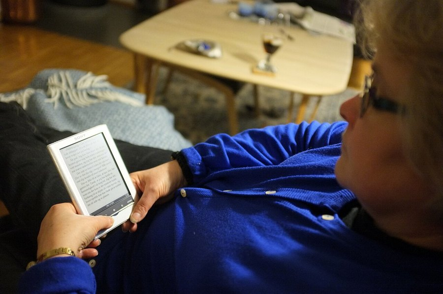

Afternoon Energy Slump: Why It Happens and How to Beat It
The 2pm crash feels like laziness. It's usually biology: a mix of circadian dip, what you ate at lunch, and how well you slept the night before.

Key takeaways
- The afternoon dip is partly built in. Your circadian rhythm includes a natural alertness drop in the early-to-mid afternoon, separate from how well you slept.
- Lunch matters more than people think. A large, high-refined-carb meal can trigger a blood sugar swing that lands right as the circadian dip starts.
- Poor sleep the night before makes it worse: even one short night shows up as a bigger afternoon crash the next day.
- A short walk or daylight exposure often works better than caffeine for the early-afternoon version of this slump.
- A slump that shows up every single day, worsens over time, or comes with other symptoms is worth mentioning to a doctor rather than managing around indefinitely.
An afternoon energy slump is a dip in alertness that shows up in the early-to-mid afternoon, usually one to three hours after lunch. It comes from a mix of your body's natural circadian rhythm, blood sugar changes after eating, and the sleep debt built up the night before. Light, food choices and movement all affect how sharp it feels.
It has a bad reputation as laziness, or a sign you need more coffee. Neither is quite right. The dip is real, measurable, and happens to people who slept fine and ate a reasonable lunch, just usually a smaller version of it. What makes it worse, or better, is mostly in your control.
Why does energy drop in the early afternoon in the first place?
Your body runs on a roughly 24-hour internal clock, the circadian rhythm, and alertness doesn't rise and fall smoothly across the day. Research on sleep and alertness has consistently found a dip in the early-to-mid afternoon, separate from the bigger overnight sleep drive. It shows up even in people who got a full night's sleep and skipped lunch entirely, which is part of why it's considered at least partly biological rather than purely behavioral.
That doesn't mean lunch and sleep don't matter. It means there's a baseline dip built into the schedule, and everything else, what you ate, how you slept, how much you moved that morning, either adds to it or softens it.
Does what you eat for lunch actually make it worse?
A large meal heavy in refined carbohydrates, white bread, pasta, sugary drinks, tends to produce a sharper rise and fall in blood sugar than a meal with more protein, fiber and fat. That fall often lands right in the window the circadian dip is already happening, which can make the combined crash feel steeper than either cause would on its own.
Portion size plays a role too, separate from what's on the plate. A very large lunch, of any composition, diverts more blood flow and digestive effort than a moderate one, which some people experience as sluggishness regardless of the exact foods involved. Neither effect is universal. Some people notice barely any difference between a heavy and a light lunch, which is one reason this is worth testing on yourself rather than assuming the common advice applies equally to everyone.
How much does poor sleep the night before contribute?
A lot, and it compounds. Even one night of short or disrupted sleep tends to show up the next day as a bigger afternoon dip, not just general tiredness spread evenly across the day. Several nights of insufficient sleep in a row build what researchers call sleep debt, and the afternoon slump is often where that debt becomes most noticeable, well before it shows up as obvious evening exhaustion.
This is also where the timing gets confusing: the crash happens in the afternoon, so it's tempting to look for an afternoon cause, when the actual fix is often the previous night. If the slump has been getting worse over a stretch of weeks rather than staying steady, sleep is one of the first places worth checking.
Is caffeine the right fix, or does it backfire later?
It's the default reach for most people, and it works in the short term for most of them. What causes trouble is what happens six to eight hours later, when that same dose is still partly in your system at bedtime.
Caffeine blocks adenosine, a chemical that builds up through the day and makes you feel sleepy, so a cup of coffee or tea in the early afternoon genuinely can sharpen alertness for an hour or two. The catch is timing: caffeine has a half-life of roughly five to six hours in most adults, so a 3pm cup is still partly active at 9pm, which can push back bedtime and set up tomorrow's slump to be worse, not better.
A reasonable middle ground is having caffeine earlier, rather than reaching for it exactly when the dip hits, and treating an afternoon cup as something to use occasionally rather than daily. People who are especially sensitive to caffeine, or who already struggle to fall asleep, usually do better finding a non-caffeine fix for the 2 or 3pm window specifically.
Does light exposure really affect afternoon energy?
Yes, more than most people expect. Bright light, especially outdoor daylight, suppresses melatonin and signals to your circadian clock that it's still daytime, which can measurably counter the afternoon dip. Even five to ten minutes outside, or sitting near a bright window, tends to help more than the same five minutes spent in a dim indoor space.
This is also one reason the slump can feel worse in winter or in windowless offices: less light exposure during the day leaves the dip with less to counteract it. It won't eliminate a circadian dip entirely, but it's one of the lower-effort tools available, and it stacks well with a short walk.
What role does movement play in the afternoon slump?
A short walk, even five to ten minutes, increases blood flow and has been shown in several small studies to improve alertness and mood more reliably than sitting still waiting for a slump to pass. It appears to work through a few channels at once: light exposure if it's outside, a modest rise in heart rate, and simply breaking up a long stretch of sitting.
You don't need a workout for this effect. The research behind afternoon activity breaks generally used brief, low-intensity movement, not exercise sessions, which makes it one of the more realistic fixes for a typical workday.
Can blood sugar swings explain the worst crashes?
For some people, yes, and this overlaps heavily with the lunch question above. A sharp blood sugar rise followed by a sharp fall can produce symptoms that feel a lot like the ordinary circadian slump: heavy eyelids, trouble concentrating, sometimes a bit of shakiness or irritability. The two are easy to confuse because they often happen at the same time of day.
Repeated, pronounced energy crashes after eating, especially alongside other symptoms, are worth discussing with a doctor rather than treating as a routine afternoon slump, since they can point to something that benefits from an actual diagnosis. For the wider connection between glucose and how your mind feels, see our piece on blood sugar and brain fog.
Does the slump feel different on weekends or days off?
A lot of people notice it less on weekends, and the usual reasons are mundane rather than mysterious: less rigid meal timing, a later or more relaxed lunch, more flexibility to step outside, and often a bit more sleep the night before. None of that proves the workweek itself is the problem. It just shows how many small variables stack on top of the baseline circadian dip, and how much a slightly different routine can soften it.
Shift workers and people with irregular schedules tend to have a harder time here, since their body clock doesn't get a consistent daily cue for when the dip is “supposed” to happen. If your schedule changes often, anchoring a few habits, a short walk after the midday meal, a consistent wind-down before sleep, regardless of what time of day that falls, tends to help more than chasing a fixed clock time.
What actually helps, step by step?
None of these require an overhaul, and none of them demand giving anything up entirely. The goal is stacking a few small, low-effort changes rather than finding one dramatic fix. In rough order of effort:
- Get outside, or near a bright window, for five to ten minutes in the early afternoon
- Take a short walk instead of reaching straight for a snack or a second coffee
- Build lunch around protein, fiber and some fat rather than mostly refined carbs, and notice if portion size itself makes a difference for you
- Keep caffeine earlier in the day if evening sleep is already a struggle
- Protect a consistent bedtime, since one short night reliably makes the next afternoon worse
- Stand up and move every hour or so rather than sitting through the entire dip
Most people notice some improvement within a few days of trying two or three of these together. None of them fixes a sleep debt built up over weeks overnight, so give it more than one day before deciding something isn't working.
When is an afternoon slump a sign of something else?
An occasional dip that responds to a short walk, daylight or a lighter lunch is normal and not worth worrying about. A slump that happens every single day regardless of what you eat or how you slept, that's gotten noticeably worse over weeks, or that comes with other symptoms, unexplained weight change, persistent low mood, snoring and gasping at night, or thirst and frequent urination, deserves a conversation with a doctor rather than another cup of coffee.
Thyroid issues, sleep apnea and blood sugar problems can all show up first as “I'm just tired every afternoon,” and a basic checkup or blood panel can rule those out fairly quickly. Depression and anxiety can also show up as flat, low energy that happens to be most noticeable in a quiet afternoon stretch rather than a specific mood symptom, which is part of why a persistent slump is worth mentioning even if nothing else seems obviously wrong.
It also helps to bring specifics to that appointment rather than a general complaint: when the dip starts, how long it lasts, whether it tracks with meals or with how you slept, and whether anything reliably helps. That kind of detail narrows down the possibilities a lot faster than “I'm tired in the afternoons” on its own. For more on how what you eat and drink shows up in your focus, see our guide on caffeine and memory, and for the wider picture see our energy and metabolism coverage.
Frequently asked questions
Is an afternoon energy slump the same as being sleep deprived?
Not exactly. Some of the dip is a built-in circadian pattern that shows up even in well-rested people, though poor sleep does make it noticeably worse. Think of it as a baseline dip that sleep debt piles on top of, rather than one single cause.
Does a bigger lunch always make the slump worse?
Often, but not for everyone. The effect is strongest with large, refined-carb-heavy meals. A moderate lunch with protein and fiber tends to produce a smaller blood sugar swing, though some people notice little difference regardless of what they eat.
Is a short nap a good fix for the afternoon slump?
A nap of 10 to 20 minutes can help some people, as long as it's early enough not to interfere with nighttime sleep and doesn't run so long that you wake up groggier than before. It's not a universal fix, and for some it makes falling asleep that night harder.
Does drinking more water help with the afternoon crash?
Mild dehydration is a known contributor to fatigue and reduced alertness, so making sure you're actually drinking enough water through the day is a reasonable, low-cost thing to check before assuming the cause is something more complicated.
Why does the slump feel worse on some days than others?
The dip itself is fairly consistent, but what you stack on top of it changes daily: how you slept, what and how much you ate, stress levels, and how much daylight or movement you got. A worse day is usually a few of those lining up at once.
Can exercise earlier in the day prevent the afternoon slump?
Regular exercise, even earlier in the day, is linked to better overall energy and sleep quality, which indirectly softens the afternoon dip over time. It's a longer-term lever rather than something that works the same afternoon.
Should I just switch my biggest meal to dinner instead of lunch?
Some people find this helps, since a smaller midday meal can mean a gentler blood sugar swing in the early afternoon. It's reasonable to test for a week or two, though it isn't necessary for everyone and doesn't address the circadian portion of the dip.
Related: Why am I always tired · Blood sugar swings and brain fog · Caffeine and memory
Image: Per Palmkvist Knudsen / Wikimedia Commons / CC BY-SA 3.0